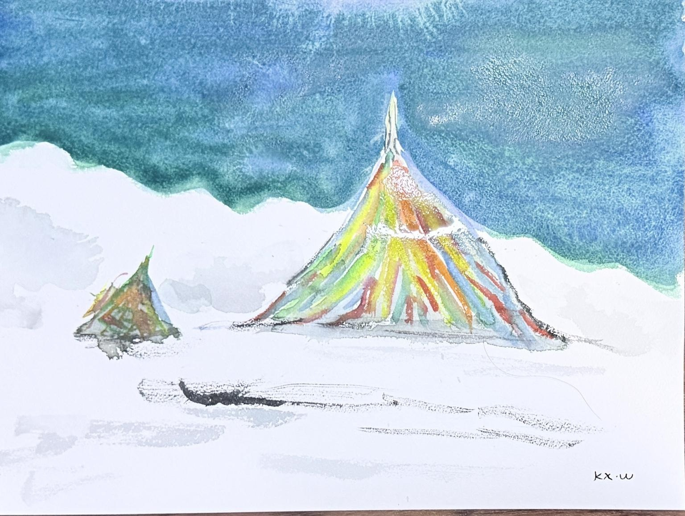

The Other Realm
他界

- Artwork ID / 作品编号
- KW-W-000005
- Year / 年份
- 2026
- Medium / 媒介
- Watercolor on paper / 纸本水彩
- Dimensions / 尺寸
- 28.5 × 38.3 cm (H × W / 高 × 宽)
Sky, open white space and an ascending form suggest a passage toward an unknown distance. The work approaches death not as a closed end, but as a threshold: one state of existence ceases and another, still unseen, may begin.
蓝天、白色空间与向上伸展的形态构成了一条通往远处的路径。作品触及死亡，却未将死亡视为绝对终止，而更接近一次未知的越界：一种存在状态结束，另一种状态由此开启。所谓尽头，也可能只是通向尚不能看见的“他界”。